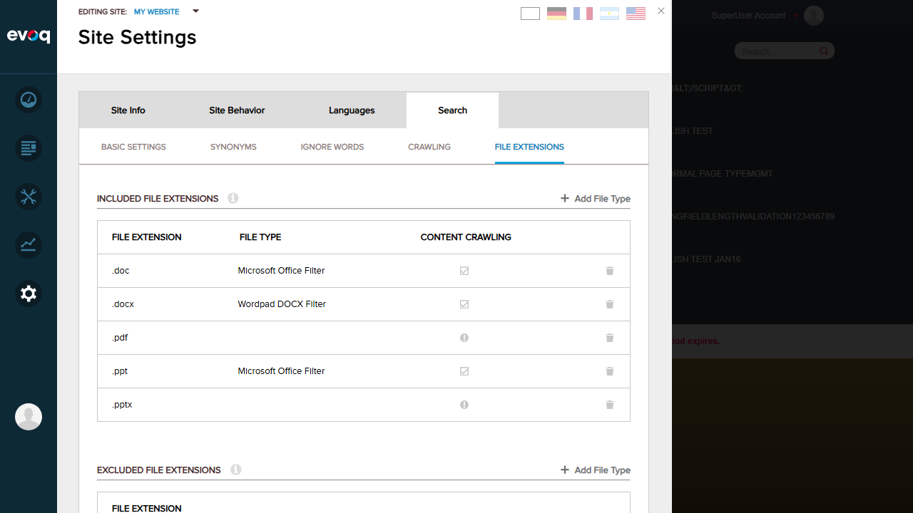
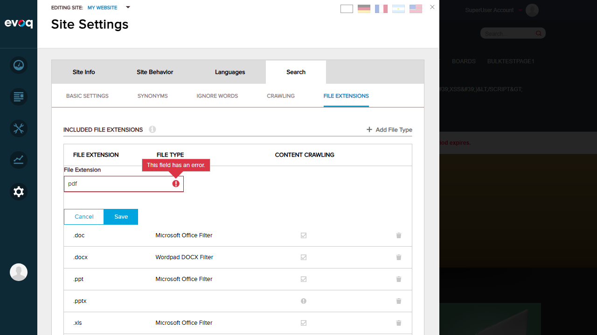
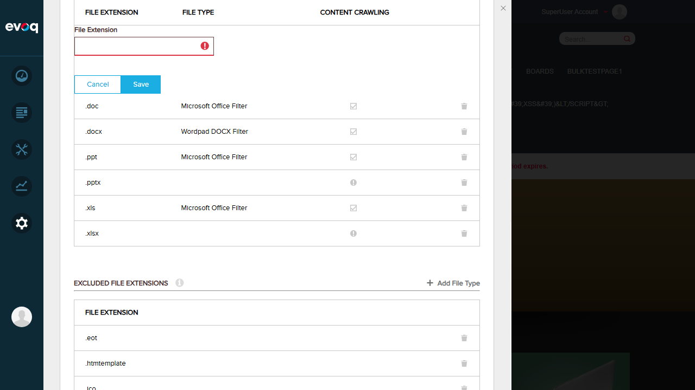
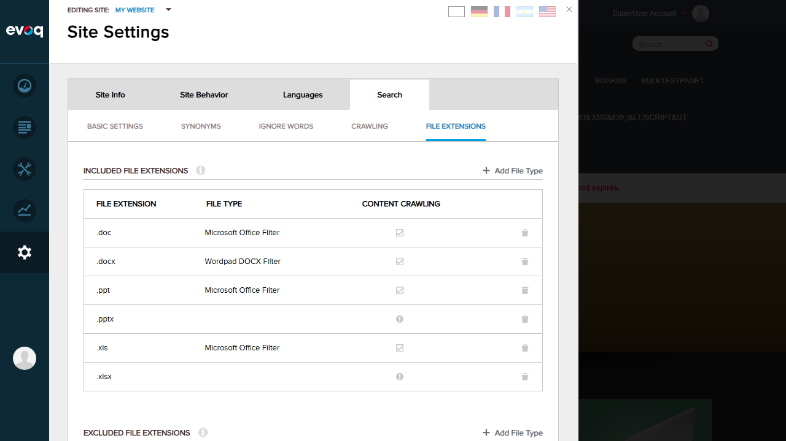
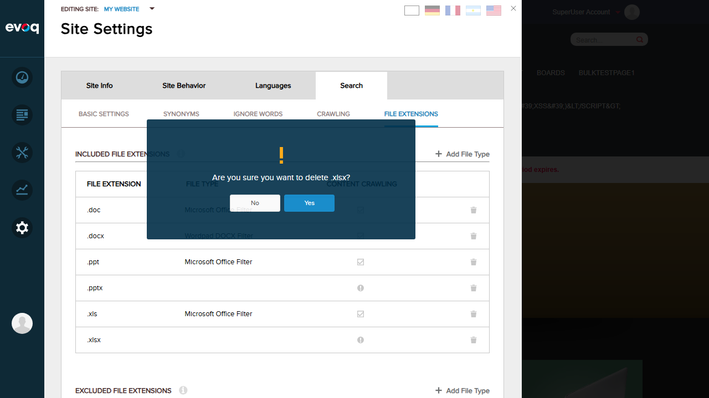
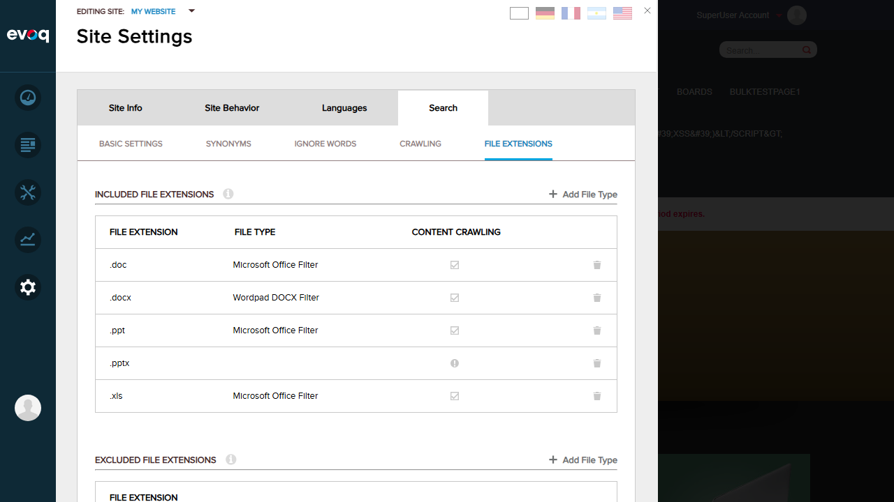
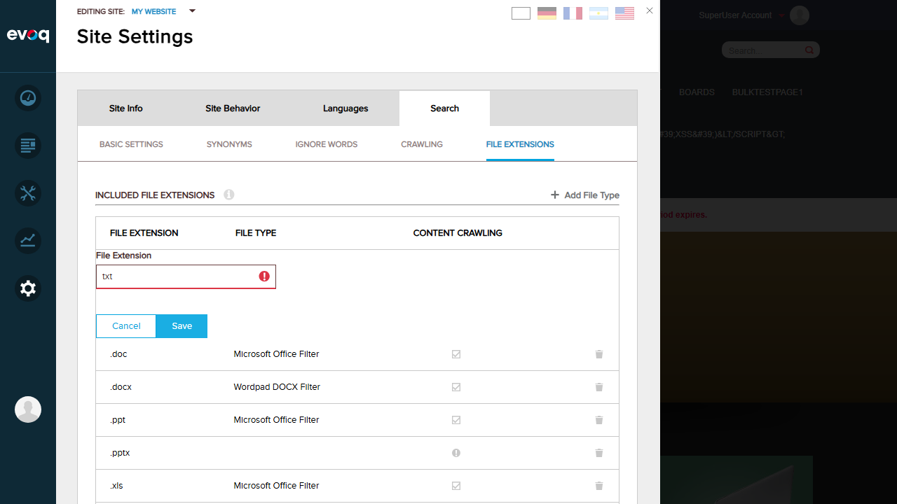

| Extension | Evoq.PersonaBar.SiteSettings |
|---|---|
| Feature Name | Included File Extension Management |
| Description | Manages file extensions that are allowed to be indexed and crawled by the search system |
| UI Location | Admin > Settings > Site Settings > Search > File Extensions > Included Extensions |
| Testing Priority | High (Thorough Testing) |
| Test Date | January 6, 2026 |
| Test Case | Status |
|---|---|
| View list of all included extensions | PASS |
| Add extension not in whitelist (verify error) | PASS |
| Add duplicate extension (verify error) | PASS |
| Empty extension value validation | PASS |
| Delete included file extension | PASS |
| Verify IFilter information display | PASS |
| Add new extension (whitelist restricted) | PASS |
Overall Result: 7/7 Tests PASSED
Status: PASS
Description: Verify that the list of included file extensions is displayed correctly with all columns.
Expected Result: List displays File Extension, File Type (IFilter), and Content Crawling columns with data.
Actual Result: List displays correctly with .doc, .docx, .ppt, .pptx, .xls, .xlsx extensions. IFilter information shows "Microsoft Office Filter" or "Wordpad DOCX Filter" where available. Content Crawling column shows checkmarks for extensions with IFilter and warning icons for those without.
Status: PASS
Description: Verify that adding a file extension not in the allowed whitelist shows an error.
Expected Result: Error message displayed indicating the extension is not allowed.
Actual Result: Red error icon appears with tooltip "This field has an error." The extension was not added to the list.
Status: PASS
Description: Verify that adding a duplicate file extension shows an error.
Expected Result: Error message displayed indicating duplicate extension.
Actual Result: Red error icon appears next to the input field. The duplicate extension was not added.
Status: PASS
Description: Verify that submitting an empty extension value shows a validation error.
Expected Result: Validation error displayed for empty input.
Actual Result: Red error icon appears next to the empty input field, preventing the submission.
Status: PASS
Description: Verify that file extensions can be deleted from the included list.
Expected Result: Confirmation dialog appears, and after confirmation, the extension is removed.
Actual Result: Confirmation dialog "Are you sure you want to delete .xlsx?" appeared with Yes/No buttons. After clicking Yes, .xlsx was removed from the list.
  Status: PASS
Description: Verify that IFilter information is correctly displayed for each extension.
Expected Result: Extensions with available IFilter show filter name and checkmark. Extensions without IFilter show warning icon.
Actual Result:
Status: PASS
Description: Verify that the system properly restricts adding extensions to those in the allowed whitelist.
Expected Result: Error shown if extension is not in whitelist; success if it is.
Actual Result: The "txt" extension is not in the allowed whitelist, so an error was displayed. This confirms the whitelist validation is working correctly. Only extensions configured in the system whitelist can be added.
